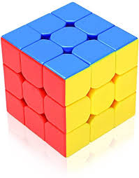
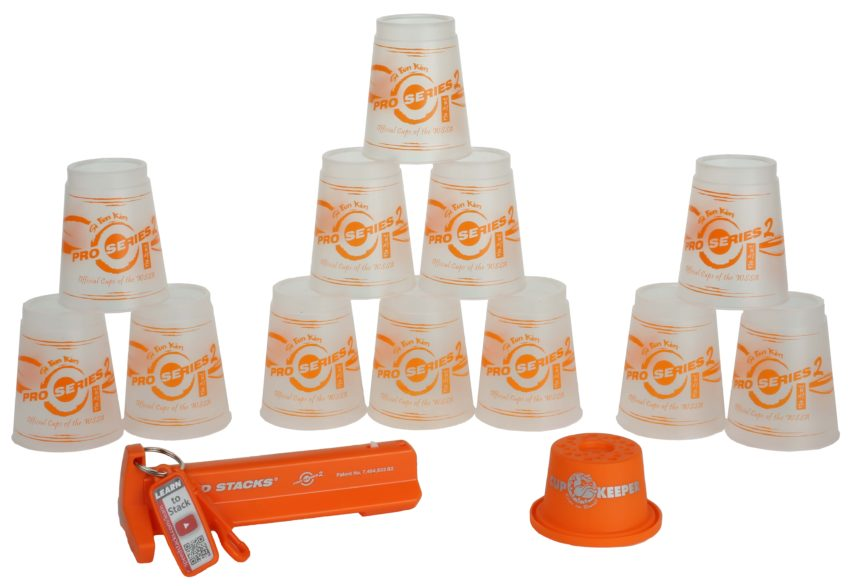
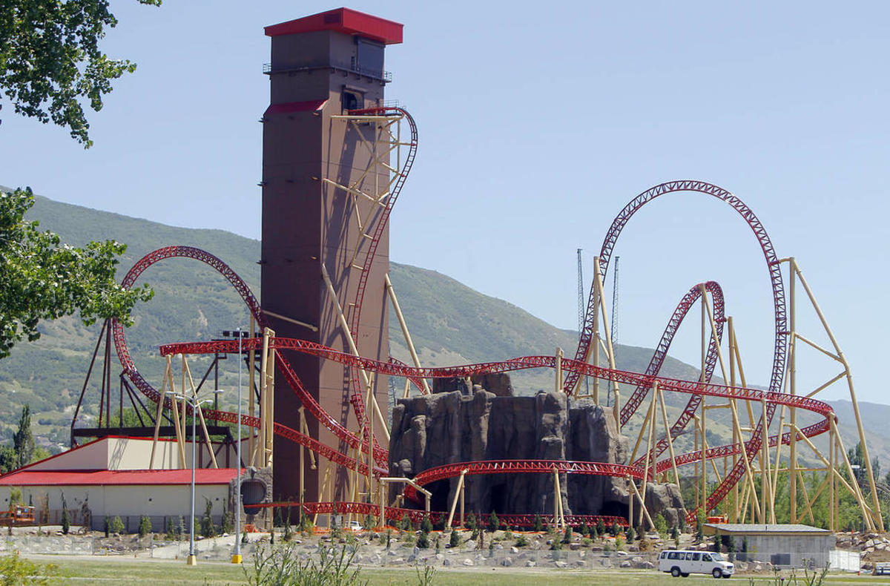

Hello and welcome to my second project and I promise I will make it 4 pages this time insted of 3.
My favorite color is yellow so that is why my color background is yellow.
I'm also in 12th grade and I'm going to graduate this school year, after that, I will come back as a returning seinor.
Rubik's cubes are one of my best things to do to keep on practicing solving the cubes really fast and I will keep going till I get fast at them, these will calm me down for like a bit.
Speed stacking is also sometimes that I like to do and I'm also fast at them to keep practicing till I get my fastest time I have ever gotten.
Oh and I forgot to tell you, I have those just like the image
Lagoon is one of my favorite places to go and I even work here at the foods station and if I have a day off, I will go there for free and get discounts for paid rides.
Cannibal is one of my favorite rides at Lagoon and it was a fun roller coaster to go on in there.